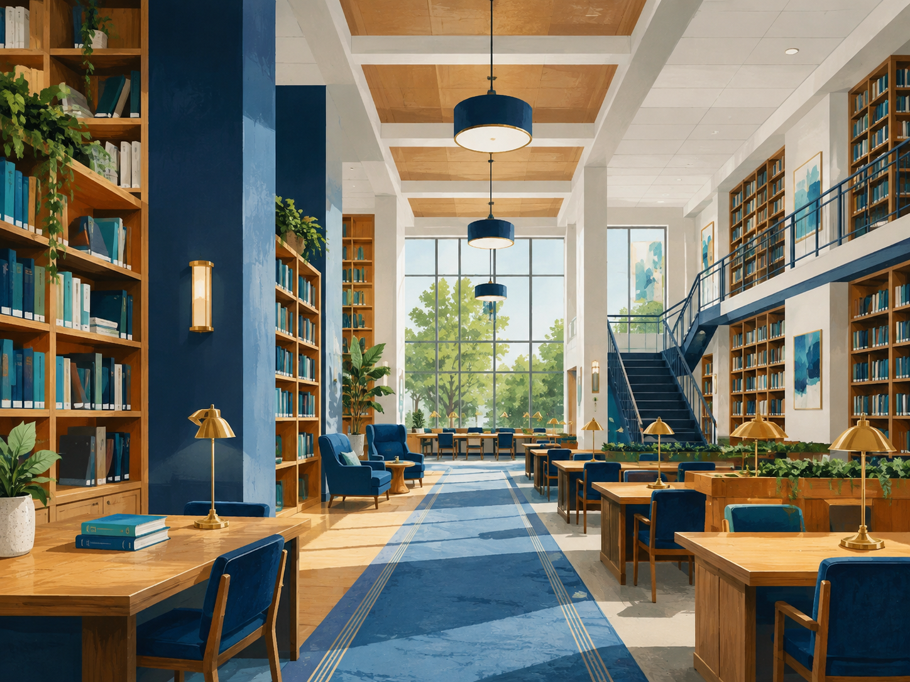

Locais do campus
Conheça os espaços disponíveis. Cada cartão traz categoria, localização e uma informação útil.

Biblioteca
- Categoria: Estudo
- Localização: Bloco A, térreo
- Informação útil: Aberta de segunda a sexta, das 7h às 22h.
Ver detalhes da Biblioteca

Laboratório de Informática
- Categoria: Tecnologia
- Localização: Bloco B, 2º andar
- Informação útil: Uso com agendamento para projetos fora do horário de aula.
Ver detalhes do Laboratório de Informática

Cantina
- Categoria: Alimentação
- Localização: Bloco C, térreo
- Informação útil: Aceita cartão e Pix; há opções vegetarianas.
Ver detalhes da Cantina